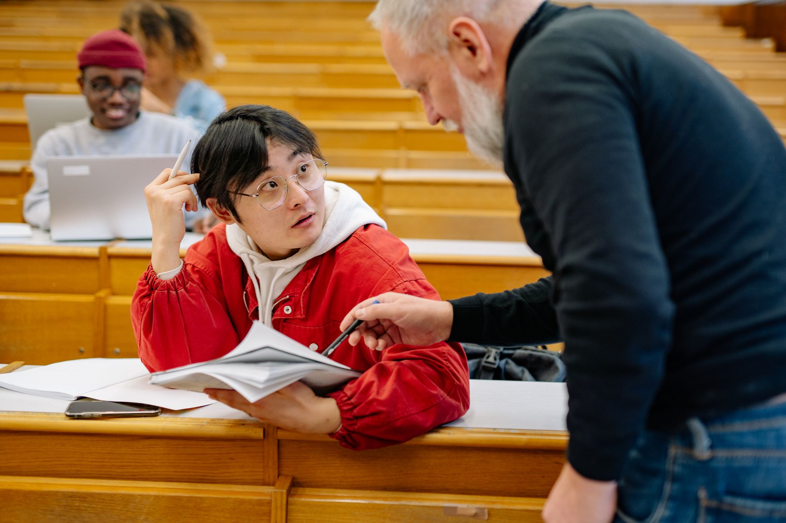

반도체 교수 부족 위기…산학 인력 생태계 균열 심화

국내 반도체 산업 인력 부족 문제가 수면 아래로 잠겨 있던 '교수 공백' 이슈로 새롭게 부각되고 있다. 정부가 반도체 관련 학과 정원을 대폭 늘리는 정책을 추진하는 가운데, 정작 강단에 설 전문 교수 수가 이를 따라가지 못하는 구조적 문제가 드러났다.
교육부에 따르면 2025년 기준 전국 4년제 대학에 개설된 반도체 관련 학과 및 전공 수는 약 120개로, 2020년 대비 두 배 이상 증가했다. 그러나 같은 기간 전임 반도체 전공 교수 증가율은 약 18%에 그쳐 교육 인프라 확충 속도가 학과 신설 속도를 크게 밑돌고 있다.
전문가들은 반도체 분야 박사급 인력이 대학 강단보다 삼성전자, SK하이닉스 등 대기업과 해외 연구소로 몰리는 '인재 유출 구조'를 핵심 원인으로 지적한다. 국내 반도체 기업의 박사급 연구원 초봉이 대학 조교수 연봉의 1.5~2배에 달하는 것으로 알려져 있어 대학의 인재 유인력이 현저히 낮다.
반도체 전공 교수 1인당 담당 학생 수는 평균 45명으로, 이공계 타 학과 평균(약 28명)에 비해 60% 이상 높은 것으로 조사됐다. 이는 실험·실습 위주의 반도체 교육 특성상 교육 질 저하를 야기하며, 졸업생의 실무 준비도에 직접적인 영향을 미치고 있다.
한국반도체산업협회 관계자는 '기업 현장에서 채용한 신입 엔지니어의 재교육 비용이 최근 5년간 30% 이상 늘었다'며 '대학 교육과 산업 현장 간 격차가 갈수록 벌어지고 있음을 보여주는 방증'이라고 지적했다.
해외에서는 이 문제를 극복하기 위해 산학 겸직 제도를 적극 활용하고 있다. 미국 매사추세츠공과대학교(MIT)와 스탠퍼드대학교는 인텔, 엔비디아 등 기업의 현직 엔지니어가 대학 강단에 서는 '리서치 사이언티스트' 트랙을 운영 중이며, 이를 통해 교수 부족과 교육 현장성 부족을 동시에 해결하고 있다.
국내에서도 일부 대학이 기업 연계 강좌를 운영하고 있지만, 제도적 뒷받침 부족으로 확산에 한계가 있다. 삼성전자와 KAIST가 공동 운영하는 '삼성전자 계약학과'가 대표 사례이나, 참여 인원이 연간 수십 명 수준에 그쳐 산업 전반의 수요를 충족하기에는 역부족이라는 평가다.
정부는 이 문제를 해결하기 위해 '반도체 특성화 대학' 지원 사업 예산을 2026년 기준 전년 대비 40% 증액해 1,200억 원 규모로 편성했다. 교수 채용 인건비 지원, 연구 장비 구축 보조 등을 통해 대학의 반도체 교육 역량을 끌어올리겠다는 방침이다.
그러나 예산 확대만으로는 한계가 있다는 지적이 많다. 반도체 전문 교수 양성에는 박사 학위 취득부터 연구 경력 축적까지 최소 10년 이상이 소요되는 만큼, 단기 처방보다 장기적 인재 파이프라인 구축이 선행되어야 한다는 게 학계의 공통된 목소리다.
업계 전문가들은 교수 처우 개선과 함께 기업-대학 간 인재 순환 시스템 구축을 대안으로 제시한다. 기업 재직자의 대학 강의 참여를 활성화하고, 반대로 교수의 기업 파견 연구를 제도화하면 양측 모두의 역량을 높이는 선순환이 가능하다는 설명이다.
반도체 소재 분야의 교수 부족은 특히 심각한 것으로 나타났다. 식각 소재, 포토레지스트, 고순도 가스 등 첨단 소재 분야를 전문적으로 가르치는 교수는 전국적으로 50명 미만인 것으로 추정되며, 이 분야 전문 인력 양성 공백이 소재 국산화 전략의 발목을 잡을 수 있다는 우려가 나온다.
향후 전망과 관련해, 정부가 추진 중인 반도체 메가클러스터와 연계한 '산학 공동 캠퍼스' 모델이 새로운 돌파구로 주목받고 있다. 기업 연구소와 대학 강의실이 물리적으로 인접한 환경을 조성해 현장 전문가의 교육 참여 장벽을 낮추는 것이 핵심이다.